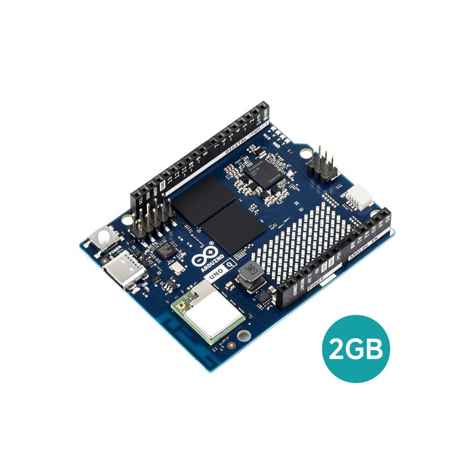
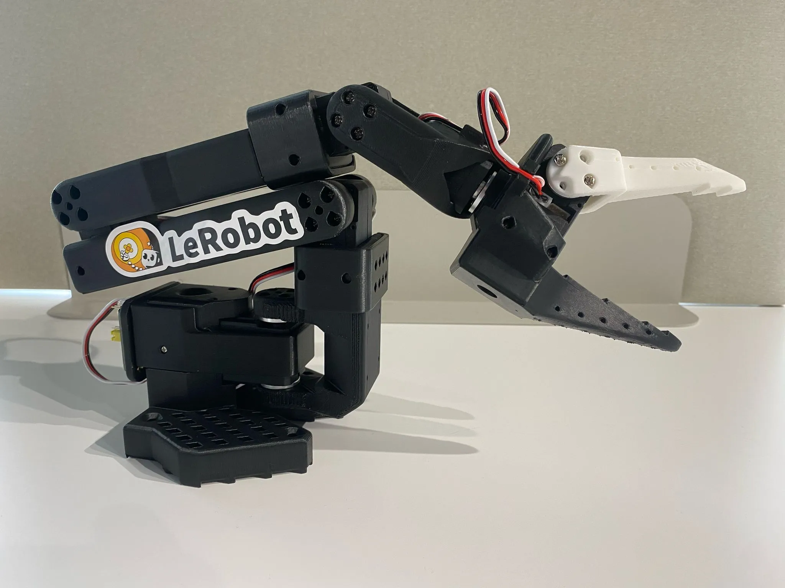
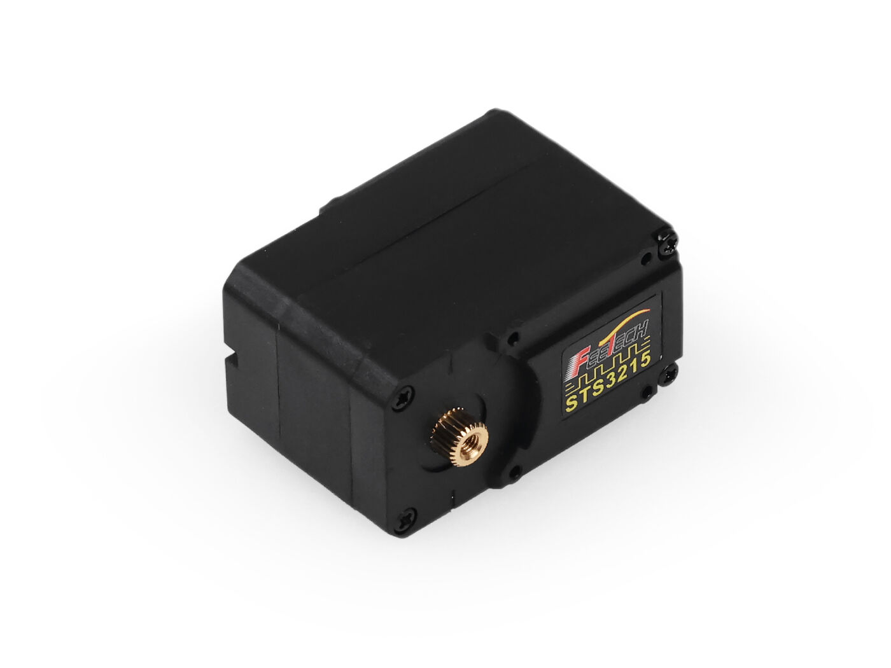
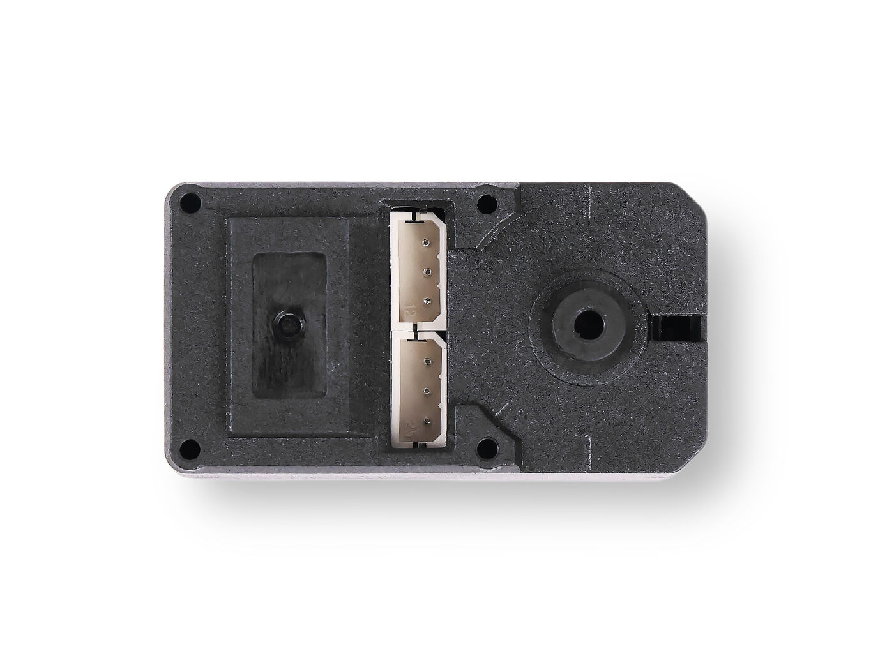
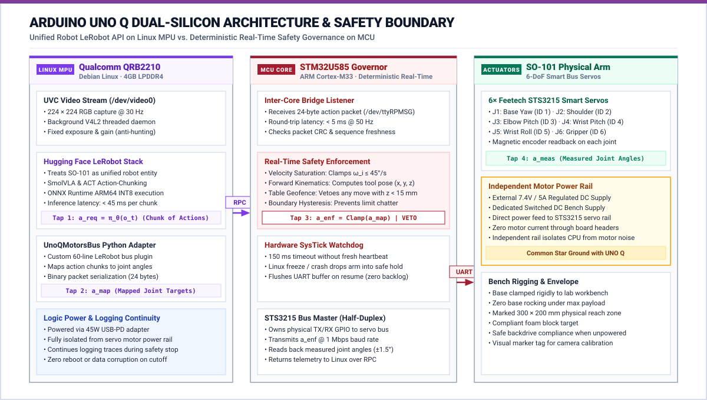
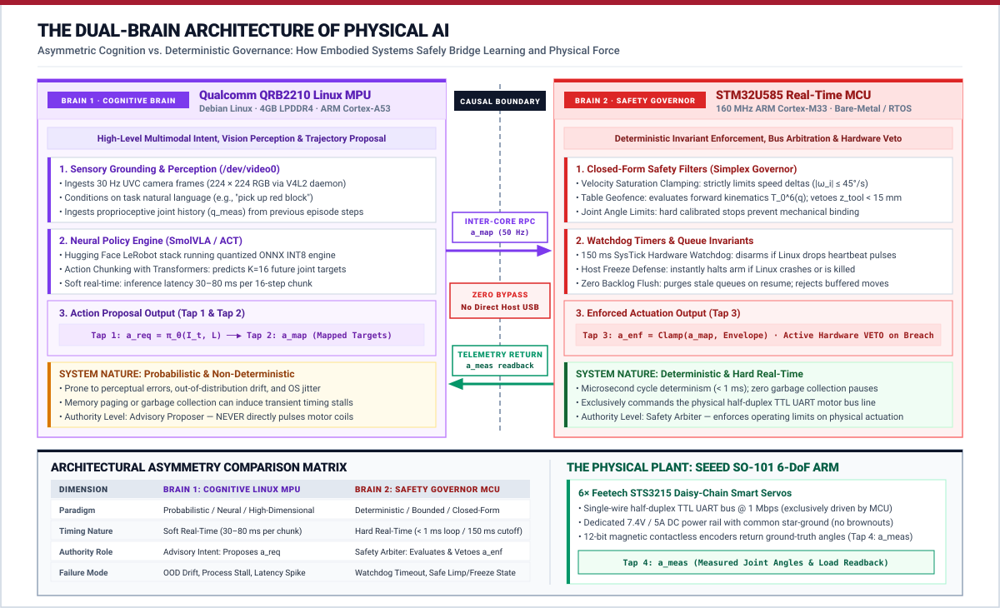
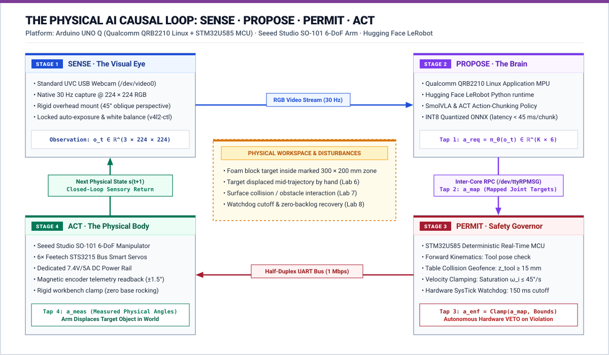
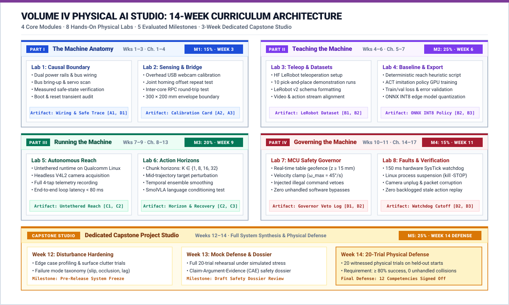

Master Course Syllabus: Physical AI Systems Studio
Course Title: Physical AI Systems: Machine Learning Systems That Sense and Act Course Code: MLSYS-401 / ETH-PAI / SEAS-CS249r Term: 14-Week Laboratory Seminar & Project Studio Instructors: Prof. Vijay Janapa Reddi (Harvard University) & Dr. Andrea (ETH Zurich / Lab Director) Primary Textbook: MLSysBook Volume IV: Physical AI Systems Studio Repository: github.com/harvard-edge/MLSysBook-vol4-labs
1. Course Overview & The Core Premise
“Physical AI begins where computation stops being symbolic and becomes physical force.”
In traditional digital AI, an algorithm processes tokens or pixels. Mistakes are harmless, symbolic, and easily undone with a software reset. In Physical AI, an algorithm commands real electrical currents to actuators possessing mass, velocity, inertia, and momentum. If the model makes a mistake, physical things collide, tear, or break. You cannot Ctrl+Z physics.
This course teaches how to build, deploy, evaluate, and govern an embodied machine. Students learn to take high-capacity neural policies (Vision-Language-Action models like Hugging Face SmolVLA and ACT), deploy them onto an edge processor (Arduino UNO Q Qualcomm Linux MPU), and safely delegate physical actuation authority to a 6-DoF robotic arm (Seeed Studio SO-101) within an independent, deterministic microcontroller safety governor (STM32U585 MCU).
2. Hardware & Software Components
Each bench station provides an integrated physical and computational workstation:
The Hardware Platform
| Component | Role in Lab Bench Station | Technical Specification | Visual Reference |
|---|---|---|---|
| Arduino UNO Q (“Unikue”) | Dual-silicon brain: Linux MPU + Real-time MCU | Qualcomm QRB2210 (Debian Linux) + STM32U585 MCU, inter-core RPC, hardware watchdog |  |
| Seeed Studio SO-101 Arm | 6-DoF physical robot manipulator | 6 revolute joints, 3D-printed rigid structure, calibrated workspace boundary |  |
| Feetech STS3215 Smart Servos | Daisy-chained serial bus actuators | 12-bit magnetic encoder (\(0.088^\circ\)), 19 kg·cm stall torque @ 7.4V, 1 Mbps TTL UART |  |
| Dual Power Infrastructure | Decoupled logic and motor power rails | 45W USB-C PD (Logic) + Dedicated 7.4V/5A DC (Servos) with common star ground |  |
- The Dual-Brain Compute Board (Arduino UNO Q “Unikue”):
- Qualcomm Dragonwing QRB2210 MPU: Quad-core 64-bit ARM Cortex-A53 running Debian Linux. Ingests USB video frames, runs quantized ONNX policy inference, and packages action chunk proposals (\(a_{\text{req}}\)).
- STM32U585 Real-Time Microcontroller (MCU): Dedicated ARM Cortex-M33 running bare-metal/RTOS firmware. Mediates the half-duplex TTL motor bus, enforces hard real-time safety limits (\(a_{\text{enf}}\)), and manages watchdog timers.
- Inter-Core Bridge: High-speed internal RPC communication port connecting Linux to the MCU with sub-millisecond latency.
- The Robot Body (Seeed Studio SO-101 6-DoF Follower Arm):
- 6× Feetech STS3215 serial bus smart servos in a daisy-chained TTL half-duplex configuration at 1 Mbps.
- Bidirectional telemetry reporting measured joint angles (\(q\)), angular velocity (\(\dot{q}\)), motor temperature, and mechanical load/torque.
- The Visual Sensor:
- Standard 720p/1080p UVC USB webcam mounted on a rigid overhead/oblique clamp observing the workspace.
- Electrical & Safety Infrastructure:
- Regulated 7.4V/5A DC motor power supply separate from logic power (45W USB-C PD).
- Switched motor power toggle sharing a common star ground with the Arduino UNO Q.
The Software Spine
- Hugging Face LeRobot: Open-source robot learning framework handling teleoperation capture, data formatting, and deployment loops.
- LeRobot Dataset v3 Format: Standardized Parquet + MP4 multi-modal episode storage logging all four action taps (
a_req,a_map,a_enf,a_meas). - Target Neural Policy Architectures:
- SmolVLA: Compact Vision-Language-Action policy conditioned on camera pixels, joint states, and natural language prompts.
- ACT (Action Chunking with Transformers): Multi-step joint trajectory prediction policy.
- Edge Runtime: ONNX Runtime / INT8 quantization optimized for Qualcomm ARM Cortex-A53 execution providers.

3. Pedagogy & Studio Philosophy
- The Dual-Brain Architecture as Core Systems Pedagogy: Physical AI cannot be solved by a single monolithic computing environment. High-capacity foundation policies demand a complex, probabilistic Linux application environment (Brain 1: Qualcomm QRB2210 MPU), while mechanical actuators demand hard real-time determinism, microsecond bus control, and physical safety guarantees (Brain 2: STM32U585 MCU). Students learn to construct, benchmark, and defend this fundamental architectural boundary across every lab.

- Bench-First Studio Learning: There are no passive lecture halls. Conceptual systems principles are grounded immediately in physical experiments at the bench.
- The S·P·A Causal Feedback Loop: Every physical episode connects: \[\text{Sense (Camera/Telemetry)} \longrightarrow \text{Propose (Linux VLA)} \longrightarrow \text{Permit (STM32 MCU)} \longrightarrow \text{Act (SO-101 Servos)}\]

- The Three-Part Scope Test: A lab submission is rejected if it merely runs a classifier on a screen or wires a model to an unmonitored hardcoded script. Action must be learned, consequential, and permitted by an independent safety boundary.
- Adversarial Verification: You do not prove a physical AI system works by recording a cherry-picked 5-second video. You prove it by allowing instructors and peer teams to introduce physical disturbances (lighting drops, target displacements, obstacle obstacles) and measuring whether the system recovers or safely abstains.
4. Learning Objectives (The 12 Transferable Competencies)
Students are evaluated against the Physical AI Station Competency Card across four balanced quadrants (3 competencies per quadrant = 12 total):
Quadrant A: Measure the Plant (Physical × Characterize)
- A1 — Plant Mechanics, Load & Safe Envelope: Quantify kinematic degrees of freedom, mechanical travel limits, actuator load/torque saturation, power distribution, homing calibration, and de-energized safe rest state under power loss.
- A2 — Multi-Modal Sensing, Calibration & Contact: Calibrate multi-modal feedback streams (\(T_{\text{cam}}^{\text{base}}\) and joint telemetry \(q\)); quantify measurement noise, mechanical backlash, contact detection, and sensor dropout failure modes.
- A3 — Feedback Timing, Synchronization & Latency: Establish synchronized timestamping across perception and actuation; measure physical sensor-to-torque loop latency; identify and reject stale physical feedback.
Quadrant B: Characterize the Brain (Computing × Characterize)
- B1 — Physical Dataset Engineering & Multi-Tap Logging: Capture repeatable physical demonstration episodes with synchronized multi-modal streams; continuously record the four action taps (\(a_{\text{req}}, a_{\text{map}}, a_{\text{enf}}, a_{\text{meas}}\)); construct leak-free train/val/test splits.
- B2 — Deterministic Baseline Benchmarking: Implement an unlearned, deterministic controller (rule-based or scripted) to establish the objective boundary where classical methods fail and learned approaches become necessary.
- B3 — Edge Model Profiling & Resource Budgets: Train and compress a learned policy (SmolVLA or ACT); quantize/export for edge execution; profile memory footprint and inference latency against real-time control deadlines on Qualcomm Linux.
Quadrant C: Act in the World (Physical × Control)
- C1 — Closed-Loop Autonomous Action: Close the autonomous loop on physical hardware; deploy learned policy proposals to drive actuators, producing verified, consequential state changes in the physical workspace without host intervention.
- C2 — Temporal Horizons & Action Dynamics: Characterize the trade-off between multi-step trajectory/chunk horizons (\(K\)) and single-step reactive control; quantify open-loop drift, tracking error accumulation, and re-observation frequency.
- C3 — Disturbance Detection, Adaptation & Abstention: Detect physical discrepancies (e.g., target displacement, slip, partial obstruction) through fresh sensory observations; demonstrate that the learned policy alters its plan to adapt, recover, or safely abstain.
Quadrant D: Govern the System (Computing × Control)
- D1 — Hardware Authority Routing & Boundary Enforcement: Enforce an asymmetric architecture where neural proposals flow exclusively through an independent real-time microcontroller permission boundary (\(a_{\text{req}} \to a_{\text{map}} \to a_{\text{enf}}\)); mathematically and physically prove zero unmonitored host bypass.
- D2 — Real-Time Safety Governor & Fault Isolation: Implement hard real-time velocity clamps, acceleration limits, collision geofences, communication watchdogs, and motor power cutoffs; demonstrate safe state transition under injected faults with zero command backlog.
- D3 — Physical Release Defense & Evidence Dossier: Conduct a statistically frozen 20-trial physical evaluation across held-out starting poses and adversarial disturbances; evaluate failure modes against the baseline; defend a formal Physical Release Dossier.
5. Assessment, Milestones & Grading Scheme
Physical engineering cannot be judged by paper exams. Grades are earned through witnessed bench demonstrations, milestone packets, and the Capstone oral defense:
| Milestone | Schedule | Weight | Deliverable & Witnessed Physical Evidence | Target Competencies |
|---|---|---|---|---|
| Milestone 1: Station Charter & Envelope | End of Week 3 | 15% | Measured joint envelope, zero-calibration, power-off drop trace, camera extrinsics, and proof of single live MCU path (zero host USB bypass). | A1, A2, A3, D1 |
| Milestone 2: Edge-Ready Policy | End of Week 6 | 25% | 30-episode LeRobot dataset (4 action taps logged), scripted baseline benchmark, and quantized ONNX policy running <100ms on Qualcomm Linux. | B1, B2, B3 |
| Milestone 3: Autonomous Closed-Loop Reach | End of Week 9 | 20% | Live visual reach completed autonomously on hardware, chunk horizon benchmark (\(K=1\) vs \(16\)), and successful recovery from target displacement. | C1, C2, C3 |
| Milestone 4: Certified Governed Station | End of Week 11 | 15% | Injected fault trial: MCU refuses velocity breaches, communication watchdog halts arm upon Linux freeze with zero backlog. | D1, D2 |
| Milestone 5: Capstone Release & Defense | End of Week 14 | 25% | 20 live held-out physical disturbance trials, baseline comparison, oral defense, and formal Physical Release Dossier. | Full 12-Card Mastery (D3) |
6. Team Station Dynamics (Rotating Roles)
Students work in teams of 2 or 3 per bench station. To ensure individual accountability and comprehensive skill mastery, roles rotate on a weekly basis:
- The Operator:
- Controls hardware power, physical target positioning, teleoperation input devices, and oversees bench motor power cutoffs.
- Responsible for mechanical calibration, homing checks, and fixture safety.
- The Systems Lead:
- Operates the Qualcomm Linux terminal, executes LeRobot scripts, manages ONNX model quantization, and monitors inter-core RPC bridge logs.
- Responsible for runtime latency profiling and software version control.
- The Evidence Reviewer / Auditor:
- Logs run IDs, verifies timestamp synchronization, records the 4 action taps, captures error plots, and maintains the team’s physical lab notebook.
- Tracks weekly sign-offs on the team’s Competency Card.
Individual Accountability: At the final Capstone defense, each team member is randomly assigned one raw trace or fault recovery to explain and defend individually.
7. The Physical Safety Contract & Lab Policy
Because actuators impart physical momentum and electrical current: 1. The Power Separation Mandate: Motor DC power may only be energized after the STM32 firmware has initialized and the operator confirms the workspace is clear. 2. The Table Geofence: Actuator trajectories must remain within the marked table boundaries. Driving the gripper into the tabletop or mounting bracket triggers an immediate hardware disarm. 3. Hardware Incident Protocol: If a servo chatters, buzzes, stalls, or overheats, switch off motor power within 2 seconds. A post-incident inspection is mandatory before rearming. 4. Zero Live Bypass Rule: Plugging a host USB cable directly into the servo bus to bypass the STM32 MCU permission boundary results in an immediate milestone failure.
8. Station Logistics, Bench Booking & Spares
- Supervised Studio Sessions: Each team receives 3 hours of supervised lab bench time weekly with instructor support.
- Open Studio Booking: Stations are available outside class hours via an online reservation portal. Teams may book up to 6 hours of additional bench time weekly.
- Offline Preparation Requirement: Students must write code, test preprocessing pipelines, and validate model architectures offline using recorded replay datasets before arriving at the bench. Bench time is reserved for physical trials.
- Spare Parts Depot: Teaching staff maintains spare STS3215 servos, gears, cables, and webcams. Damaged components are swapped immediately during office hours.
9. Master Lab Sequence & Textbook Reading Mapping
Formal instruction spans Weeks 1–11 (8 focused labs), followed by the 3-week Capstone Project Studio (Weeks 12–14):

Detailed Lab Directory:
- Lab 1: The Causal Boundary & Servo Bus Bring-Up (Weeks 1–2): Chapters 1 & 2 \(\to\) Checks A1, D1.
- Lab 2: Multi-Modal Sensing & The Inter-Core Bridge (Week 3): Chapters 3 & 4 \(\to\) Checks A2, A3.
- Lab 3: Teleoperation, LeRobot Dataset & Action Taps (Weeks 4–5): Chapters 5 & 7 \(\to\) Checks B1.
- Lab 4: Deterministic Baseline & SmolVLA/ACT Export (Week 6): Chapter 6 \(\to\) Checks B2, B3.
- Lab 5: Autonomous Closed-Loop Reach on UNO Q (Weeks 7–8): Chapters 8, 11, 13 \(\to\) Checks C1.
- Lab 6: Action Horizons, Language & Disturbances (Week 9): Chapters 10 & 12 \(\to\) Checks C2, C3.
- Lab 7: The Microcontroller Safety Governor (Week 10): Chapters 12 & 14 \(\to\) Checks D1.
- Lab 8: Fault Injection & Fail-Safe Cutoffs (Week 11): Chapters 15 & 16 \(\to\) Checks D2.
- Capstone Project Studio & Release Defense (Weeks 12–14): Chapters 1–17 \(\to\) Checks D3.
10. The Capstone Project Studio Specification (Weeks 12–14)
The Capstone is an intensive, 3-week physical integration project where student teams demonstrate full systems autonomy: * Week 12 (Task Definition & Data Engine): Teams formulate an independent manipulation challenge (e.g., color-conditioned bin sorting, compliant peg insertion, or obstacle-cluttered pick-and-place). Teams record 50 clean demonstration episodes and fine-tune their target policy (SmolVLA or ACT). * Week 13 (Adversarial Peer Testing): Teams exchange “fault challenges” with peer groups. A peer team introduces safe, unannounced physical disturbances (e.g., unexpected object displacements, illumination changes, soft compliant obstacles). Teams harden their STM32 safety governors and recovery routines. * Week 14 (The Graduation Trial & Defense): * 20 Live Physical Trials: 10 baseline trials across varied object poses + 10 disturbance trials. * The Physical Release Dossier: A formal, auditable Claim-Argument-Evidence document specifying the tested operating envelope, latency tails, baseline performance comparisons, and failure mode taxonomy. * Live Oral Defense: Every student traces an end-to-end physical episode from raw camera pixels to motor torque.
11. Standardized Lab Document Blueprint
Every lab handout (lab-01 through lab-08) adheres to a strict, 7-section operational template:
# Lab X: [Title]
**Schedule:** Week X | **Part:** [Part I–IV] | **Textbook Reading:** Chapters [X, Y]
**Target Competencies:** [ ] C_id | **Milestone Alignment:** Milestone X
### 1. The Physical Question
What fundamental systems relationship are we measuring or proving on hardware today?
### 2. Hardware Setup
Required wiring, power supply verification, camera framing, and initial arm rest pose.
### 3. Step-by-Step Protocol
Executable terminal commands, LeRobot CLI invocations, and calibration scripts.
### 4. The Disturbance & Failure Test
The specific physical perturbation or injected software fault required for this experiment.
### 5. Multi-Tap Telemetry Trace
Logging requirements for a_req, a_map, a_enf, and a_meas.
### 6. Common Pitfalls & Debugging
Known timing traps, baud rate mismatches, lighting pitfalls, and motor stall warnings.
### 7. Sign-Off Criteria (The Exit Check)
The exact observable physical proof required for the instructor to sign the Competency Card.